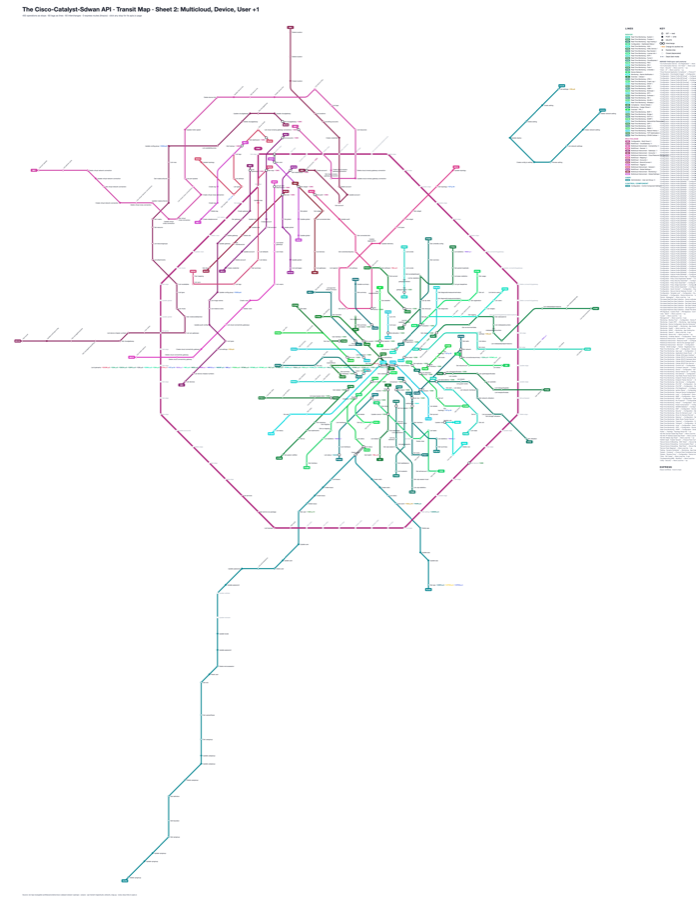
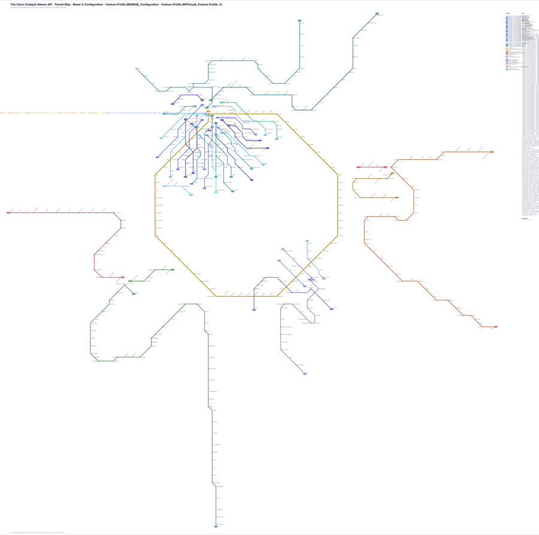
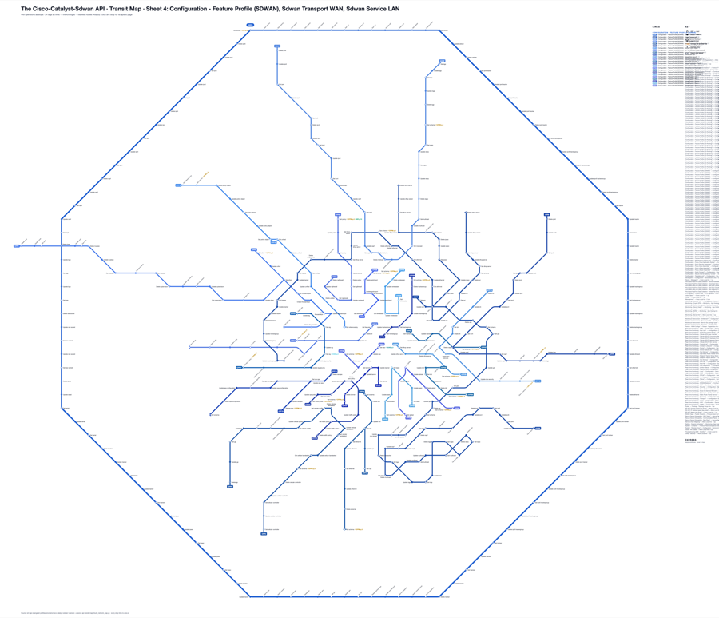
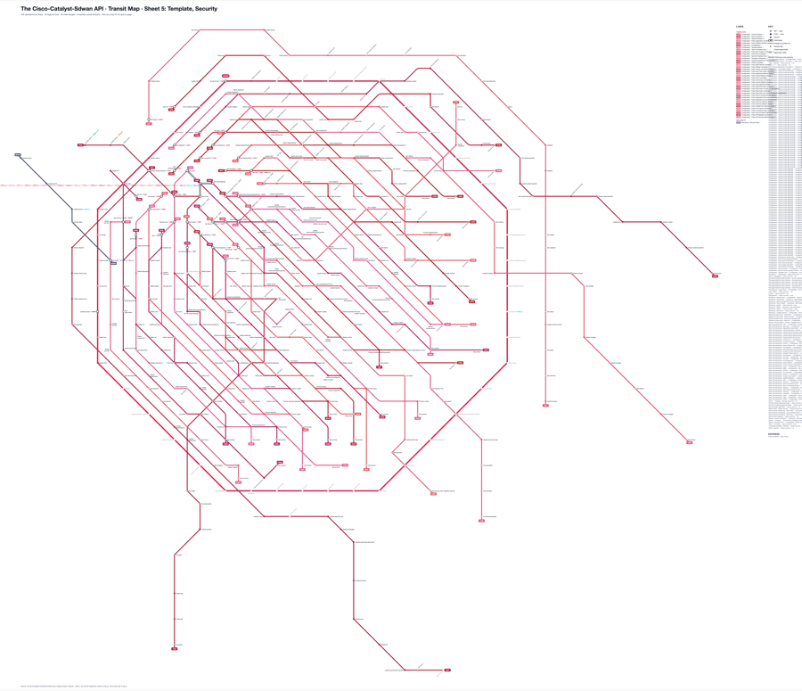
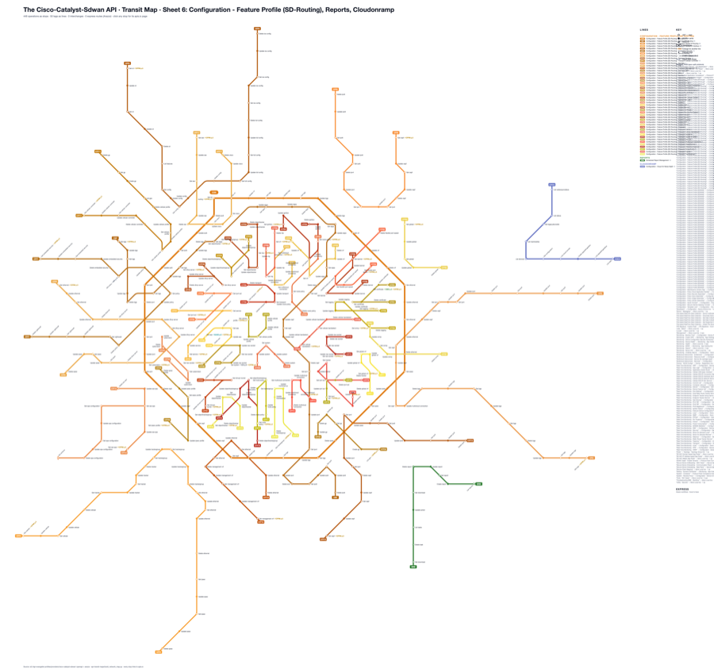
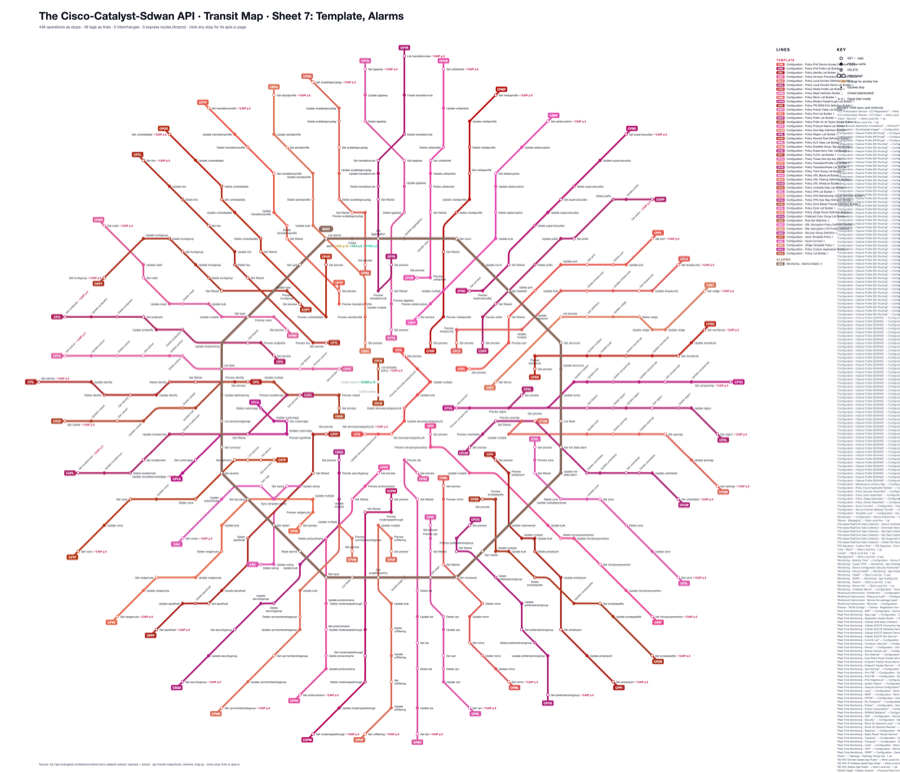
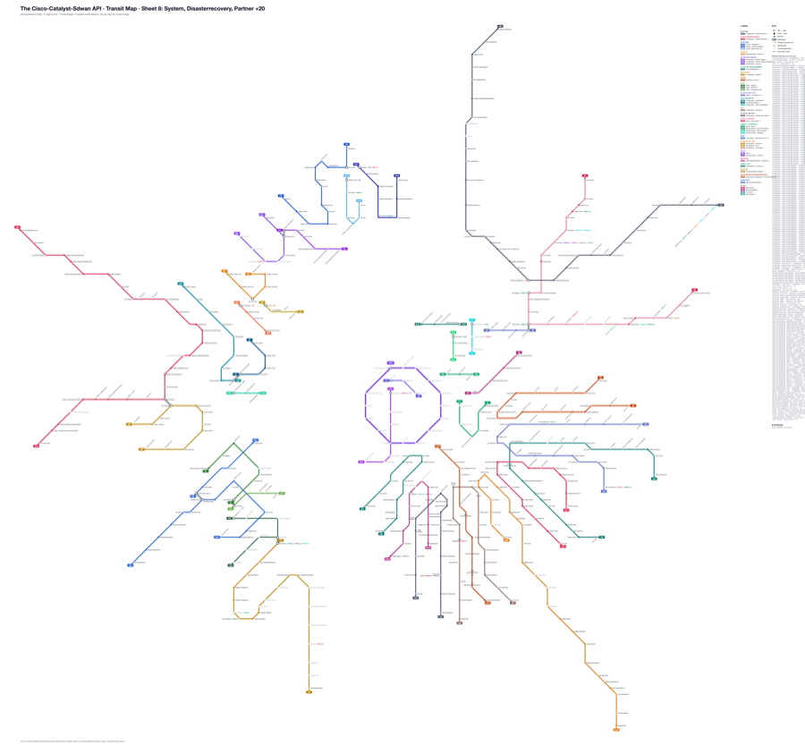
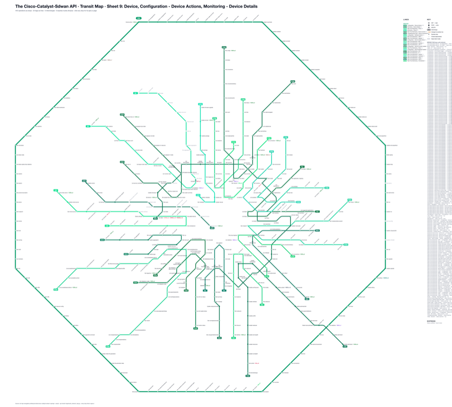
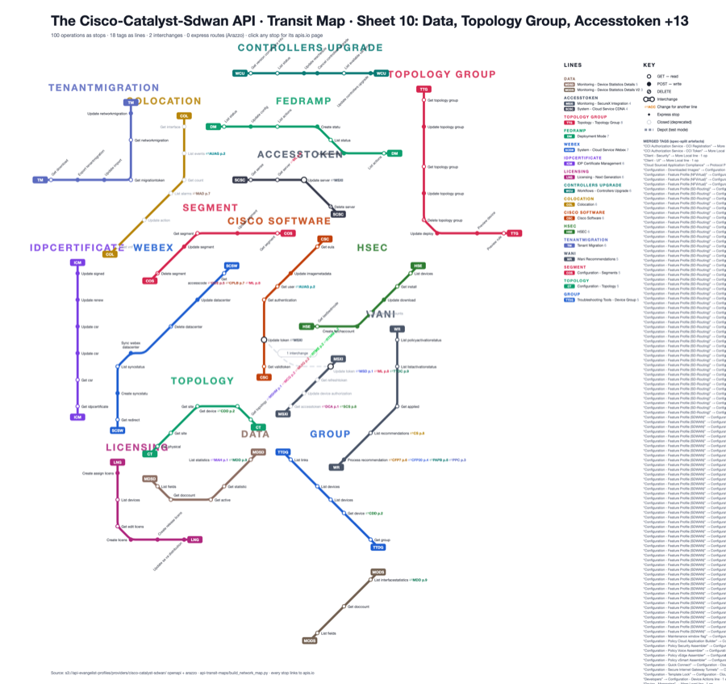

p.1 Statistics, DCA, Umbrella
450 operations · 37 lines
- Statistics
- DCA
- Umbrella
Interchanges to p.2 (8), p.3 (2), p.8 (6), p.9 (4), p.10 (4)
4136 operations on 10 sheets · products that interchange most share a sheet · on each sheet, "⇄CODE p.N" means change for that line on page N · every stop links to apis.io
450 operations · 37 lines
Interchanges to p.2 (8), p.3 (2), p.8 (6), p.9 (4), p.10 (4)

450 operations · 60 lines
Interchanges to p.1 (8), p.3 (1), p.4 (1), p.5 (3), p.6 (1), p.8 (13), p.9 (25), p.10 (8)

450 operations · 38 lines
Interchanges to p.1 (2), p.2 (1), p.4 (25), p.5 (1), p.6 (49), p.8 (5), p.10 (1)

449 operations · 24 lines

449 operations · 40 lines
Interchanges to p.2 (3), p.3 (1), p.7 (47), p.8 (6), p.9 (2), p.10 (1)

449 operations · 50 lines

448 operations · 48 lines

448 operations · 41 lines
Interchanges to p.1 (6), p.2 (13), p.3 (5), p.5 (6), p.6 (1), p.9 (5), p.10 (6)

443 operations · 23 lines
Interchanges to p.1 (4), p.2 (25), p.5 (2), p.7 (2), p.8 (5), p.10 (3)

100 operations · 18 lines
Interchanges to p.1 (4), p.2 (8), p.3 (1), p.4 (1), p.5 (1), p.6 (1), p.7 (2), p.8 (6), p.9 (3)